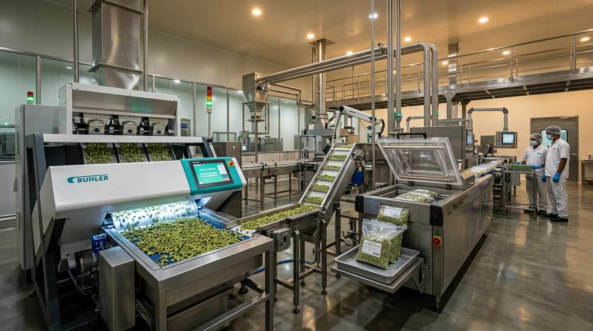

Quality & Logistics Excellence
Precision Sourcing.
Flawless Execution.
Every shipment undergoes rigorous optical color sorting, moisture testing, phytosanitary clearance, and vacuum sealed export packing.
🔍 Optical Sorting • 🧪 Moisture & Quality Testing • 📜 Phytosanitary Clearance
7-Step Workflow